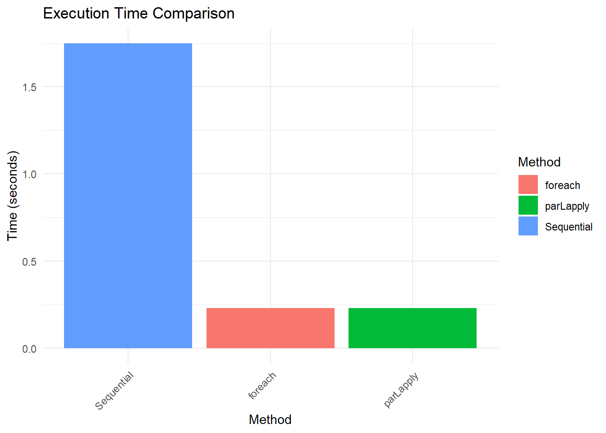
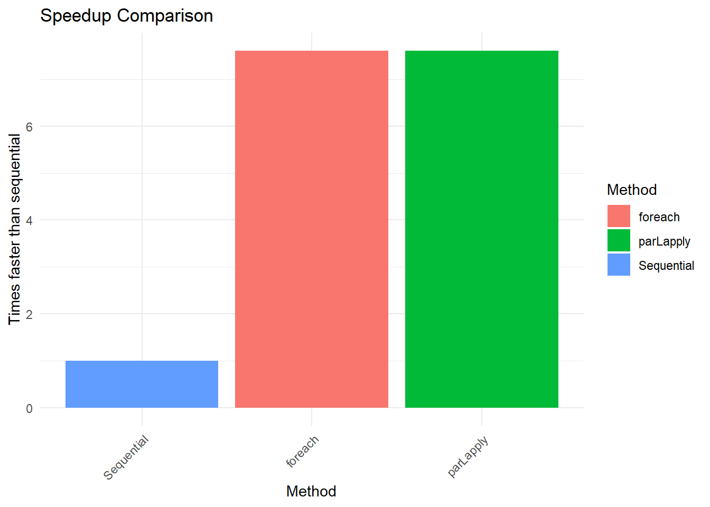

# Install packages if needed (uncomment to run)
# install.packages(c("parallel", "foreach", "doParallel", "tictoc"))
# Load the essential packages
library(parallel) # Base R parallel functions
library(foreach) # For parallel loops
library(doParallel) # Backend for foreach
library(tictoc) # For timing comparisonsParallel Computing in R
performance
r-programming
Learn how to speed up your R code using parallel computing
Packages
Detecting Available CPU Cores
The first step involves checking how many CPU cores are available on the system:
# Detect the number of CPU cores
detectCores()[1] 16Good practice dictates leaving one core free for the operating system, so typically detectCores() - 1 is used for parallel operations.
The Basics
This section demonstrates creating a simple function that takes time to execute, then compares sequential versus parallel execution times:
# A function that takes time to execute
slow_function <- function(x) {
Sys.sleep(0.5) # Simulate computation time (half a second)
return(x^2) # Return the square of x
}
# Create a list of numbers to process
numbers <- 1:10Method 1: Using parLapply (Works on All Systems)
This method works on all operating systems including Windows:
# Step 1: Create a cluster of workers
cl <- makeCluster(detectCores() - 1)
# Step 2: Export any functions our workers need
clusterExport(cl, "slow_function")
# Run the sequential version and time it
tic("Sequential version")
result_sequential <- lapply(numbers, slow_function)
toc()Sequential version: 5.05 sec elapsed# Run the parallel version and time it
tic("Parallel version")
result_parallel <- parLapply(cl, numbers, slow_function)
toc()Parallel version: 0.51 sec elapsed# Step 3: Always stop the cluster when finished!
stopCluster(cl)
# Verify both methods give the same results
all.equal(result_sequential, result_parallel)[1] TRUEMethod 2: Using mclapply (Unix/Mac Only)
For Mac or Linux systems, this simpler approach can be utilized:
# For Mac/Linux users only
tic("Parallel mclapply (Mac/Linux only)")
result_parallel <- mclapply(numbers, slow_function, mc.cores = detectCores() - 1)
toc()The foreach Package: A More Intuitive Approach
Many R practitioners find the foreach package easier to understand and implement. The package functions like a loop but can execute in parallel:
# Step 1: Create and register a parallel backend
cl <- makeCluster(detectCores() - 1)
registerDoParallel(cl)
# Run sequential foreach with %do%
tic("Sequential foreach")
result_sequential <- foreach(i = 1:10) %do% {
slow_function(i)
}
toc()Sequential foreach: 5.11 sec elapsed# Run parallel foreach with %dopar%
tic("Parallel foreach")
result_parallel <- foreach(i = 1:10) %dopar% {
slow_function(i)
}
toc()Parallel foreach: 0.58 sec elapsed# Always stop the cluster when finished
stopCluster(cl)
# Verify results
all.equal(result_sequential, result_parallel)[1] TRUECombining Results with foreach
One notable feature of foreach is the ease with which results can be combined:
# Create and register a parallel backend
cl <- makeCluster(detectCores() - 1)
registerDoParallel(cl)
# Sum all results automatically with .combine='+'
tic("Parallel sum of squares")
total <- foreach(i = 1:100, .combine = '+') %dopar% {
i^2
}
toc()Parallel sum of squares: 0.07 sec elapsed# Stop the cluster
stopCluster(cl)
# Verify the result
print(paste("Result obtained:", total))[1] "Result obtained: 338350"print(paste("Correct answer:", sum((1:100)^2)))[1] "Correct answer: 338350"Matrix Operations
Let’s try something more realistic. Matrix operations are perfect for parallelization:
# A more computationally intensive function
matrix_function <- function(n) {
# Create a random n×n matrix
m <- matrix(rnorm(n*n), ncol = n)
# Calculate eigenvalues (computationally expensive)
eigen(m)
return(sum(diag(m)))
}
# Let's process 8 matrices of size 300×300
matrix_sizes <- rep(300, 8)Performance Comparison
Let’s compare how different methods perform:
# Sequential execution
tic("Sequential")
sequential_result <- lapply(matrix_sizes, matrix_function)
sequential_time <- toc(quiet = TRUE)
sequential_time <- sequential_time$toc - sequential_time$tic
# Parallel with parLapply
cl <- makeCluster(detectCores() - 1)
clusterExport(cl, "matrix_function")
tic("parLapply")
parlapply_result <- parLapply(cl, matrix_sizes, matrix_function)
parlapply_time <- toc(quiet = TRUE)
parlapply_time <- parlapply_time$toc - parlapply_time$tic
stopCluster(cl)
# Parallel with foreach
cl <- makeCluster(detectCores() - 1)
registerDoParallel(cl)
tic("foreach")
foreach_result <- foreach(s = matrix_sizes) %dopar% {
matrix_function(s)
}
foreach_time <- toc(quiet = TRUE)
foreach_time <- foreach_time$toc - foreach_time$tic
stopCluster(cl)
# Create a results table
results <- data.frame(
Method = c("Sequential", "parLapply", "foreach"),
Time = c(sequential_time, parlapply_time, foreach_time),
Speedup = c(1, sequential_time/parlapply_time, sequential_time/foreach_time)
)
# Display the results
results Method Time Speedup
1 Sequential 1.12 1.000000
2 parLapply 0.19 5.894737
3 foreach 0.25 4.480000Visualizing Results
# Load ggplot2 for visualization
library(ggplot2)
# Plot execution times
ggplot(results, aes(x = reorder(Method, -Time), y = Time, fill = Method)) +
geom_bar(stat = "identity") +
labs(title = "Execution Time Comparison",
x = "Method", y = "Time (seconds)") +
theme_minimal() +
theme(axis.text.x = element_text(angle = 45, hjust = 1))
# Plot speedup
ggplot(results, aes(x = reorder(Method, Speedup), y = Speedup, fill = Method)) +
geom_bar(stat = "identity") +
labs(title = "Speedup Comparison",
x = "Method", y = "Times faster than sequential") +
theme_minimal() +
theme(axis.text.x = element_text(angle = 45, hjust = 1))
Practical Implementation
Parallel computing isn’t always the optimal choice. Here are some considerations:
✅ Good for parallelization: - Independent calculations (like applying the same function to different data chunks) - Computationally intensive tasks (simulations, bootstrap resampling) - Tasks that take more than a few seconds to run sequentially
❌ Not good for parallelization: - Very quick operations (parallelization overhead may exceed the time saved) - Tasks with heavy dependencies between steps - I/O-bound operations (reading/writing files)
Best Practices
- Always stop clusters with
stopCluster(cl)when processing is complete - Leave one core free for the operating system
- Start small and test with a subset of data
- Monitor memory usage - each worker needs its own copy of the data